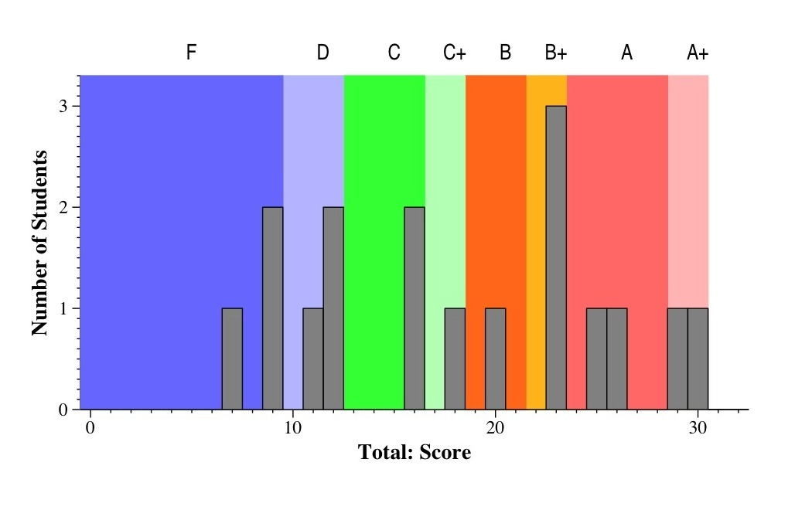
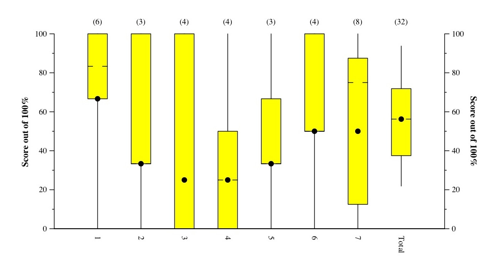
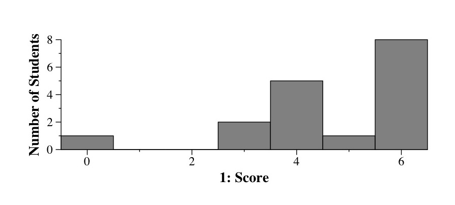
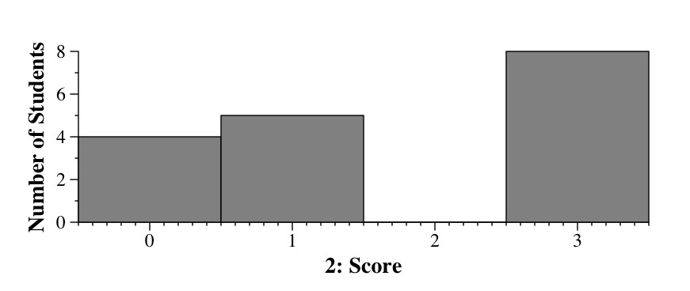
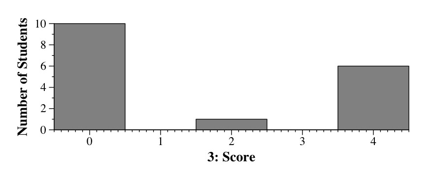
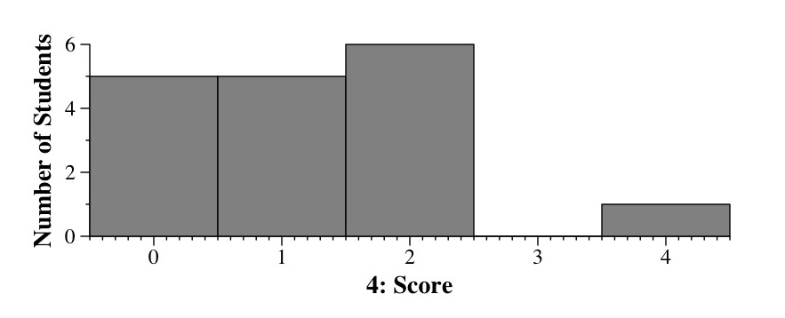
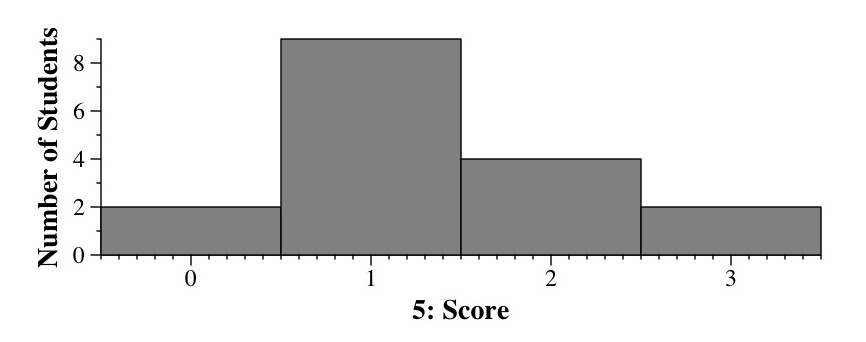
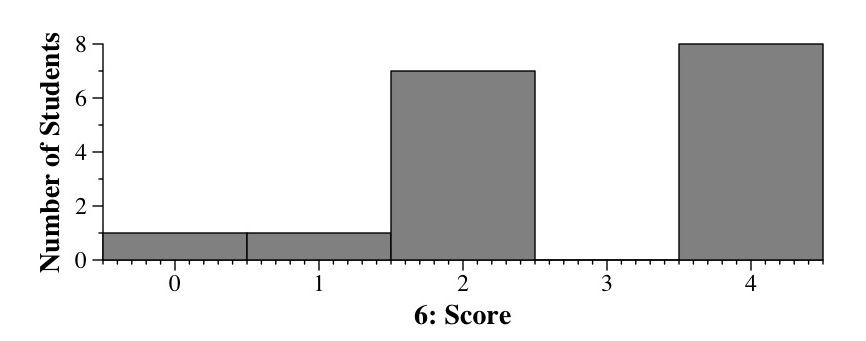
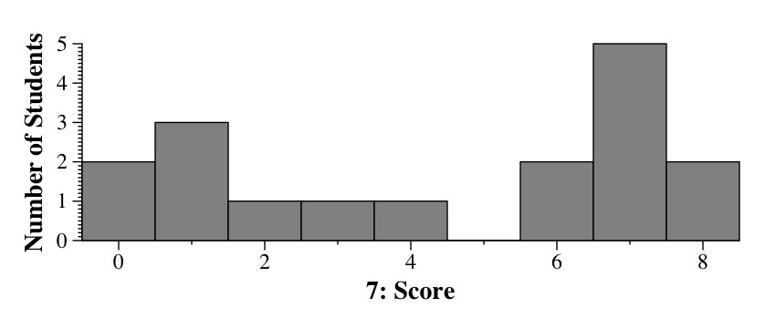

CS140 Final Exam - Fall, 2005
Jim Plank
Grades
- A+: 29-31
- A: 24-29
- B+: 22-24
- B: 19-22
- C+: 17-19
- C: 13-17
- D: 10-13
- F: 0-10
Exam Scores

Tukey Plots

Question 1

Question 2

Question 3

Question 4

Question 5

Question 6

Question 7
